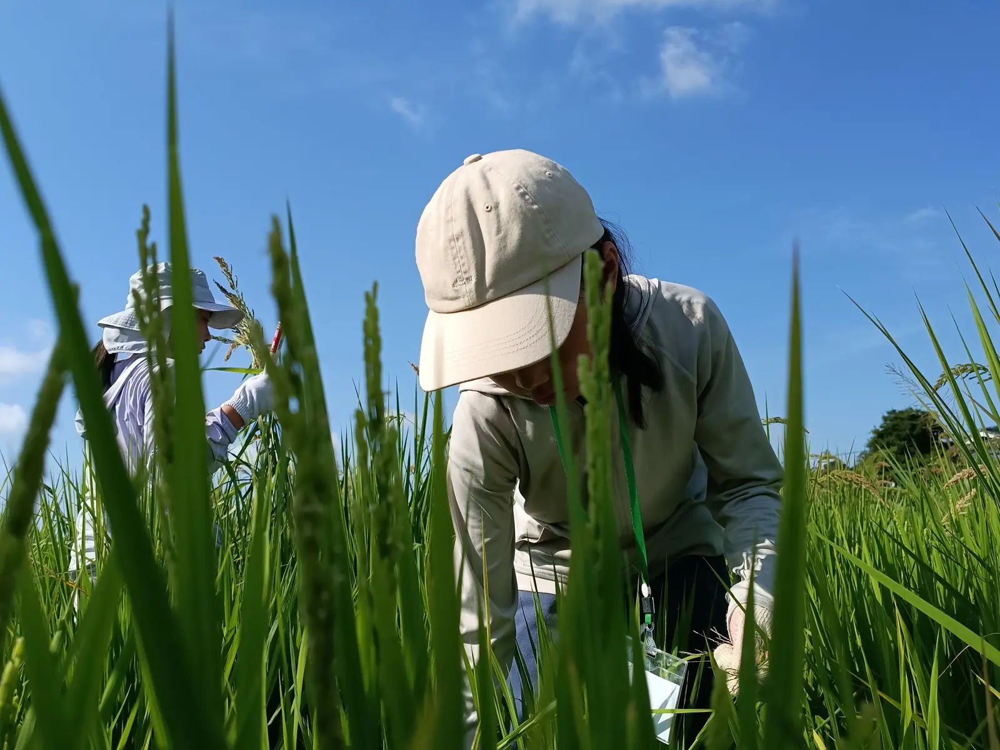

山田錦の「特A地区」とは？
東条が最高峰の産地といわれる理由

この記事の要点
- 「特A地区」は、兵庫県の山田錦産地のなかで、古くから高く評価されてきた地域の呼び名です。特A-a・特A-b・特A-cの3つに分かれます。
- 最上位の特A-aは、加東市の旧東条町全域などと、三木市の吉川町・口吉川町です。
- 評価の理由は、昼夜の寒暖差、粘土質の土、谷あいの地形、そして産地と酒蔵を結ぶ「村米制度」にあります。
- その産地がいま、猛暑と担い手不足という2つの課題に直面しています。
日本酒のラベルや酒蔵の説明で、「特A地区産山田錦」という言葉を見かけたことはないでしょうか。山田錦は「酒米の王」と呼ばれる品種で、その産地のなかでも特に評価が高い地域が「特A地区」です。
私たち「とうじょうRMO」が活動する兵庫県加東市の東条地域は、その特A地区のひとつです。このページでは、特A地区とは何か、なぜ東条が最高峰の産地といわれるのかを、公的な資料をもとに産地の立場から解説します。
1. 山田錦の「特A地区」とは
特A地区は、兵庫県の北播磨から六甲山の北側にかけて広がる山田錦の産地を、品質の評価にもとづいて区分した呼び名です。産地には昔から「酒米買うなら土地見て買え」という言葉があり、どの土地で育った米かが重視されてきました。
産地は次の3つに区分されています（日本農業遺産の申請資料による）。
| 区分 | 主な地域 |
|---|---|
| 特A-a | 加東市（旧東条町全域など）、三木市（吉川町全域、口吉川町全域） |
| 特A-b | 神戸市北区（大沢町全域、淡河町全域）、三木市細川町全域など |
| 特A-c | 上記以外の産地 |
この地区割りは、昭和13（1938）年度に作成された「村米格付表」が根拠になっています。当時は産地の村ごとに米の価格が細かく格付けされており、その評価が現在の区分に引き継がれました。
同じ資料によると、区分による価格の差は60kgあたり100〜200円ほどで、米の等級による差よりも小さいとされています。それでも「特A-a」は、酒蔵が産地を選ぶときの大きな目印になっています。
なお、ここでいう「特A」は、食用米の食味ランキングで使われる「特A」とは別のものです。山田錦の特A地区は、酒米の産地を区分する呼び名です。
2. 東条はどこにある？ 特A地区のなかの位置づけ
東条は、兵庫県加東市の東部、東条川に沿って広がる地域です。かつては加東郡東条町という独立した町で、2006（平成18）年3月に社町・滝野町と合併して加東市になりました。
東条は、旧町域の全体が最上位の「特A-a」に区分されています。加東市も、市内の多くが産地格付けで最上位の特A地区にあたると紹介しています。
「東条産山田錦」は、地域団体商標としても登録されています（商標登録第5264709号、権利者はみのり農業協同組合）。対象は、加東市の東条地域で生産された醸造用の山田錦の玄米です。
とうじょうRMOが活動する岡本・森・南山の3地区は、この東条地域のなかにあります。

3. 東条が最高峰の産地といわれる3つの理由
理由1：昼と夜の寒暖差が大きい
山田錦は、穂が出てから実るまでの時期に夜の気温がしっかり下がると、粒の中心にある「心白」がきれいに現れます。兵庫県は、三木市・加東市付近の谷あいや盆地では夏の昼夜の気温差が10℃以上になり、これが山田錦の栽培に適していると説明しています。
特A地区は、東条川や美嚢川に沿って東西に開けた谷あいに集まっています。南側の六甲山系が瀬戸内海からの暖かい風をさえぎるため、夜に気温が下がりやすい地形です。
理由2：粘土質で深い土
特A地区の多くは「神戸層群」と呼ばれる古い地層の上にあります。この土は粘土質で、稲が根を深く伸ばせる厚みがあり、肥料分をよく保ちます。背が高く、実りの最後まで養分を必要とする山田錦に向いた土です。
理由3：東西に開けた谷あいの地形
加東市は、山田錦に適した土地の条件として、東西に開けた山あいの地形を挙げています。東条地域では、東条川に沿って東西にのびる谷あいに圃場が広がっています。日当たりがよく、理由1で触れた昼夜の寒暖差も、この地形から生まれます。この風景は、何世代にもわたる手入れで守られてきました。
4. 山田錦はどんな酒米か
山田錦は、1923（大正12）年に兵庫県立農事試験場で「山田穂」と「短稈渡船」をかけ合わせて生まれました。現在の加東市沢部にある酒米試験地で試験が重ねられ、1936（昭和11）年に「山田錦」と名付けられています。加東市は、山田錦が育てられた土地でもあります。
- 粒が大きい：千粒の重さは約27gで、一般的な食用米より大粒です。
- 心白がある：粒の中心が白く見える「心白」があり、麹づくりに向いています。
- 背が高く倒れやすい：茎と穂を合わせると約130cmになります。肥料を与えすぎると倒れるため、栽培には経験が必要です。
- 実るのが遅い：6月上旬に田植えをし、8月下旬に穂が出て、10月上旬から中旬に収穫します。
兵庫県の山田錦の出荷量は全国の57％（令和4年産）を占めています。その中心が、特A地区を含む北播磨地域です。

5. 産地と酒蔵を結ぶ「村米制度」
特A地区を語るうえで欠かせないのが「村米制度」です。これは、産地の集落と酒蔵が直接結ぶ契約栽培の仕組みで、村単位の取引は明治の中ごろに始まったとされています。
酒蔵は毎年決まった集落から米を買い、集落はその酒蔵のために品質の高い米を育てます。圃場の脇に酒蔵や銘柄の名前が入った旗が立っているのは、この契約のしるしです。加東市によると、市内では13地区が村米契約を結んでいます（令和6年12月現在）。
2025（令和7）年1月には、「兵庫の酒米『山田錦』生産システム」が日本農業遺産に認定されました。伝統的な栽培技術とともに、この村米制度が評価されています。
6. 特A地区がいま直面していること
最高峰といわれる産地も、このまま続く保証はありません。東条では、次の課題が同時に進んでいます。
- 猛暑：穂が出たあとの高温で、米が白く濁る「白未熟粒」が増えています。産地の強みだった夜の涼しさが、年によっては足りなくなっています。くわしくは山田錦の高温障害対策で紹介しています。
- 担い手の減少：高齢化が進み、草刈りや水の管理といった共同作業を担う人が減っています。現状は地域の課題にまとめています。
- 農地の維持：山田錦を育てる粘土質の土は、地滑りを起こしやすい土でもあります。あぜや水路の手入れを続けなければ、圃場そのものが保てません。
とうじょうRMOは、岡本・森・南山の3地区が協力して、この産地を次の世代へつなぐ取り組みを進めています。圃場の水位を遠隔で見守る水位管理の実証や、RTK・VRSを使った自動操舵などのスマート農業で作業を軽くし、地域の外の方にも関わっていただく仕組みをつくっています。活動の全体像は3つの目的をご覧ください。
よくある質問
Q. 山田錦の「特A地区」は、誰がいつ決めたのですか？
法律で定められた制度ではなく、産地と酒蔵の取引のなかで定着してきた産地区分です。日本農業遺産の申請資料によると、現在の地区割りは、昭和13（1938）年度に作成された「村米格付表」を根拠にしています。
Q. お米の食味ランキングの「特A」と同じものですか？
別のものです。食味ランキングの「特A」は、食用米の味を銘柄ごとに評価したものです。山田錦の「特A地区」は、酒米・山田錦の産地を区分する呼び名で、評価の対象も仕組みも異なります。
Q. 特A地区は東条だけですか？
いいえ。最上位の特A-aには、加東市の旧東条町全域などのほか、三木市の吉川町・口吉川町が含まれます。特A-bには神戸市北区の大沢町・淡河町、三木市細川町などがあり、それ以外の産地は特A-cとされています。
Q. 東条の山田錦は、どこで味わえますか？
山田錦は酒米のため、ほとんどが酒蔵へ出荷され、日本酒になります。ラベルに「東条産」「特A地区産」と書かれた銘柄が目印です。東条地区のブランド米については「とうじょう米」のブランドサイトで紹介しています。
Q. 産地を訪れたり、活動に参加したりできますか？
とうじょうRMOでは、農業体験や地域のイベントを開いています。開催のお知らせは公式LINEとトップページの「お知らせ」でご案内しています。参加できるときだけ関わっていただく形で構いません。
参考資料

この記事を書いた「とうじょうRMO」について
岡本・森・南山の3地区が協力し、農地を守り、地域資源を活かし、暮らしを支える農村型地域運営組織（農村RMO）です。スマート農業とコミュニティの力で、山田錦の産地を次の世代へつなぐ挑戦をしています。
この挑戦の目撃者になりませんか？
とうじょうRMOでは、気候変動や担い手不足といった課題に対し、スマート農業やコミュニティの力で立ち向かっています。
私たちの活動の「いま」を、まずは公式LINEから覗いてみてください。